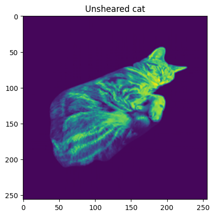
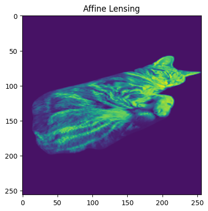
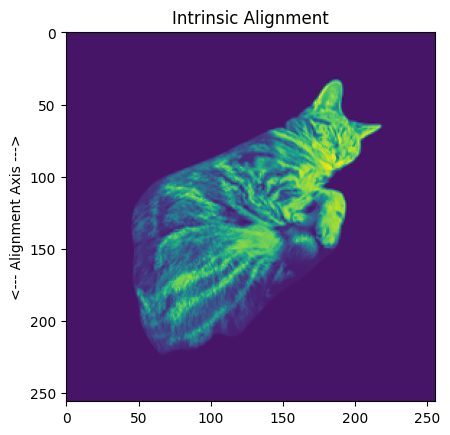
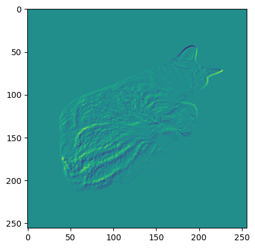
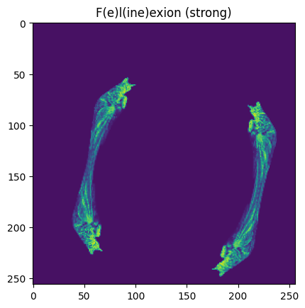

CATSim
[2]:
%matplotlib inline
%reload_ext autoreload
%autoreload 2
from pathlib import Path
import batsim
import galsim
import matplotlib.pyplot as plt
import numpy as np
from PIL import Image, ImageSequence
try:
import fpfs
except ImportError:
fpfs = None
[3]:
cat_dir = Path.cwd()
if not (cat_dir / "cat.png").exists():
cat_dir = Path("notebooks/CATSim")
image = Image.open(cat_dir / "cat.png").convert("L")
def make_cat_galaxy(size=256, offset=(-20, 40)):
# Build a GalSim interpolated profile from the CATSim source image.
image_array = np.asarray(image.resize((size, size)), dtype=np.float64)
return galsim.InterpolatedImage(galsim.Image(image_array, scale=1.0), offset=offset)
def render_cat(galaxy, transform=None):
# Render through BATSim's current public API.
return batsim.simulate_galaxy(
galaxy,
scale=1,
ngrid=256,
transform_obj=transform,
draw_method="no_pixel",
)
[15]:
cat_gal = make_cat_galaxy(offset=(-20, 40))
cat_noshear = cat_gal.drawImage(nx=256, ny=256, scale=1).array
plt.imshow(cat_noshear)
plt.title("Unsheared cat")
plt.savefig(cat_dir / "cat_noshear.png")

[16]:
lens = batsim.LensTransform(gamma1=0.2, gamma2=0.0, kappa=0.01)
cat_lensed = render_cat(cat_gal, transform=lens)
plt.imshow(cat_lensed)
plt.title("Affine Lensing")
plt.savefig(cat_dir / "lens_cat.png")

[24]:
ia_cat = batsim.IaTransform(A=0.01, phi=np.radians(90), scale=1, hlr=2.5)
cat_IA = render_cat(cat_gal, transform=ia_cat)
plt.imshow(cat_IA)
plt.title("Intrinsic Alignment")
plt.ylabel("<--- Alignment Axis --->")
plt.savefig(cat_dir / "IA_cat.png")

[22]:
cat_residual = cat_noshear - cat_IA
plt.imshow(cat_residual)
[22]:
<matplotlib.image.AxesImage at 0x7f0659d0b950>

[43]:
flex_cat_gal = make_cat_galaxy(offset=(150, 150))
felinexion = batsim.FlexionTransform(
gamma1=0.0,
gamma2=0.0,
kappa=0.0,
F1=0.015,
F2=0.015,
G1=0.02,
G2=0.0,
)
cat_flex = render_cat(flex_cat_gal, transform=felinexion)
plt.imshow(cat_flex)
plt.title("F(e)l(ine)exion (strong)")
plt.savefig(cat_dir / "flex_cat.png")

[44]:
psf_array = np.zeros(cat_lensed.shape)
psf_array[cat_lensed.shape[0] // 2, cat_lensed.shape[1] // 2] = 1
coords = np.array([cat_lensed.shape[0] // 2, cat_lensed.shape[1] // 2])
if fpfs is None:
shear = None
print("Install fpfs to run the CATSim shear measurement cell.")
else:
fp_task = fpfs.image.measure_source(psf_array, pix_scale=1, sigma_arcsec=0.52)
measurements = fp_task.measure(cat_lensed, coords)
measurements = fp_task.get_results(measurements)
ellipticities = fpfs.catalog.fpfs_m2e(measurements, const=20)
response = np.average(ellipticities["fpfs_R1E"])
shear = np.average(ellipticities["fpfs_e1"]) / response
print("measured shear: %.6f" % shear)
2023/10/20 15:50:55 --- Unable to initialize backend 'cuda': module 'jaxlib.xla_extension' has no attribute 'GpuAllocatorConfig'
2023/10/20 15:50:55 --- Unable to initialize backend 'rocm': module 'jaxlib.xla_extension' has no attribute 'GpuAllocatorConfig'
2023/10/20 15:50:55 --- Unable to initialize backend 'tpu': INTERNAL: Failed to open libtpu.so: libtpu.so: cannot open shared object file: No such file or directory
2023/10/20 15:50:55 --- Order of the shear estimator: nnord=4
2023/10/20 15:50:55 --- Shapelet kernel in configuration space: sigma= 0.5200 arcsec
2023/10/20 15:50:55 --- Detection kernel in configuration space: sigma= 0.5200 arcsec
2023/10/20 15:50:55 --- Maximum |k| is 3.117
measured shear: 0.367881
[45]:
if shear is not None:
bias = abs(shear - 0.2)
print(bias)
print(bias / 0.2)
0.16788100651928028
0.8394050325964014
[46]:
image_paths = [
cat_dir / "cat_noshear.png",
cat_dir / "lens_cat.png",
cat_dir / "IA_cat.png",
cat_dir / "flex_cat.png",
]
images = [Image.open(path) for path in image_paths]
frame_duration = 2000
gif_frames = []
for img in images:
img = img.convert("P", palette=Image.ADAPTIVE)
img.info["duration"] = frame_duration
gif_frames.append(img)
gif_frames[0].save(
cat_dir / "cat_shear.gif",
save_all=True,
append_images=gif_frames[1:],
loop=0,
)
/tmp/ipykernel_87110/2428314930.py:19: DeprecationWarning: ADAPTIVE is deprecated and will be removed in Pillow 10 (2023-07-01). Use Palette.ADAPTIVE instead.
img = img.convert("P", palette=Image.ADAPTIVE)